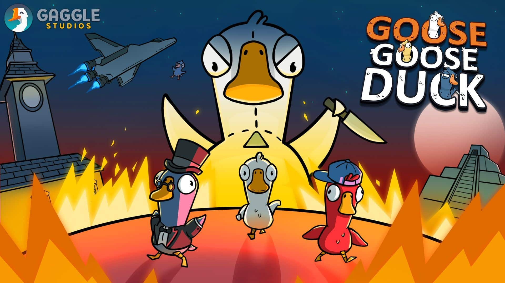
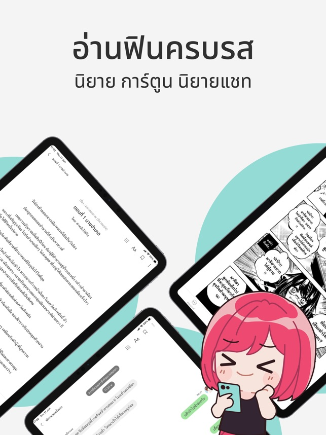

goose goose duck

Goose Goose Duck เกม Co-op แนว Among Us ที่เล่นไปก็ไว้ใจใครไม่ได้กับการตามหาคนร้ายและทำภารกิจไปพร้อมๆกัน
เพื่อความเชี่ยวชาญในการหลอกหลวงเอาตัวรอด นอกจากวิธีเล่นแล้วเรามาดูดีกว่าบทบาทหลากหลายอาชีพในเกมนี้มีฝ่ายไหนและทำอะไรได้บ้าง
ฝ่ายห่าน : Goose
รับบทเป็นคนดีต้องทำภารกิจแต่ละอย่างให้ครบตามที่กำหนดเพื่อชัยชนะ สังหารใครไม่ได้นอกจากกดโหวตเท่านั้น
ฝ่ายเป็ด : Duck
รับบทเป็นตัวร้าย คนไม่รักดี ใจเกเร มีหน้าที่ขัดขวางการบรรลุภารกิจของเป็ดโดยการเชือดเป็ดทิ้งทุกตัว
ReadAWrite

ReadAWrite (รี้ดอะไร้ต์) คือ เว็บไซต์บริการอ่านเขียนนิยายออนไลน์ขนาดใหญ่อีกแห่งหนึ่งในประเทศไทย พัฒนาโดย Meb Corporation Ltd.
จัดอยู่ในกลุ่ม Books & Reference เป็นระบบชุมชนนักเขียนและนักอ่านหลากแนว ทั้งนิยายรัก นิยายจีนโบราณ นิยายวาย นิยายยูริ และการ์ตูน & โดจินชิ
และยังมีระบบ Donate เพื่อให้นักเขียนสามารถรับเงินสนับสนุนจากนักอ่านที่ชื่นชอบผลงานของตนได้
จุดเด่นที่น่าสนใจ ของ ReadAWrite นอกเหนือจากเป็นแหล่งเผยแพร่งานเขียนแล้ว ยังมีโปรแกรมอัจฉริยะ Proof ไว้ให้ตรวจคำผิดของข้อความได้อีกด้วย